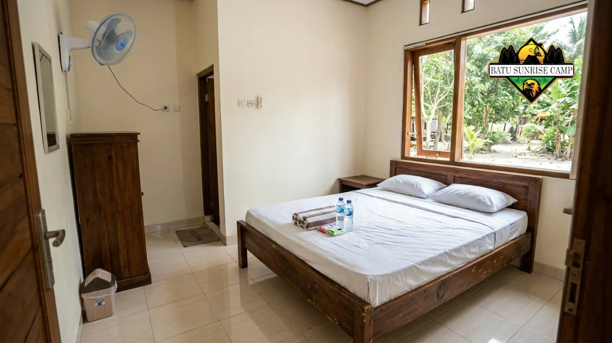

Cara memilih penginapan di Pantai Sawarna adalah menyesuaikan anggaran, jarak ke pantai, fasilitas, jumlah tamu, dan ulasan terbaru sebelum memesan kamar.
- Tentukan anggaran dan jumlah tamu terlebih dahulu.
- Periksa jarak penginapan ke pantai yang ingin Anda kunjungi.
- Baca ulasan terbaru, bukan hanya rating rata-rata.
- Tanyakan aturan tamu, fasilitas, dan kebijakan pembatalan kepada pengelola.
Apa Kriteria Utama Memilih Penginapan di Sawarna?
Kriteria utama memilih penginapan di Sawarna adalah anggaran, lokasi, fasilitas dasar, kapasitas kamar, dan reputasi berdasarkan ulasan tamu yang masih baru.
Mulailah dari anggaran. Rangkuman Popmama.com, yang masih dapat dibaca per November 2026, menunjukkan rentang tarif penginapan dekat Pantai Sawarna sekitar Rp229.000 sampai Rp1.300.000 per malam. Menentukan batas anggaran sejak awal membantu Anda menyaring pilihan dengan cepat.
Kriteria berikutnya adalah lokasi. Desa Sawarna seluas 2.165,26 hektare menurut data KKN-T IPB 2025, sehingga jarak antar titik wisata dapat cukup jauh.
Pilih penginapan yang dekat dengan pantai tujuan utama Anda agar waktu dan biaya transportasi harian lebih kecil. Setelah itu, periksa fasilitas dasar seperti kamar mandi, air bersih, dan parkir.
Bagaimana Membaca Ulasan Tamu dengan Benar?
Membaca ulasan tamu dengan benar berarti memeriksa tanggal ulasan, jumlah ulasan, isi keluhan berulang, dan kesesuaian jenis tamu dengan kebutuhan Anda.
Rating tinggi dari sedikit ulasan kurang meyakinkan. Sebagai contoh, Penginapan Erbysa di Sawarna memiliki rating 4,2 dari 5 berdasarkan 90 ulasan di Tiket.com, dengan ulasan terbaru bertanggal Maret 2026. Jumlah ulasan yang lebih besar memberi gambaran lebih stabil dibanding rating dari beberapa tamu saja.

Kamar penginapan sederhana di Sawarna yang bersih dan memadai untuk istirahat setelah seharian menjelajah pantai.
Perhatikan keluhan yang berulang. Ulasan tamu pada sebuah resort di Sawarna pada 2024 menyebut banyak nyamuk akibat pepohonan di sekitar kamar, sementara ulasan lain memuji kebersihan dan balkon.
Keluhan yang berulang lebih bermakna daripada satu komentar tunggal. Pilih juga ulasan dari jenis perjalanan yang mirip dengan rencana Anda, misalnya perjalanan keluarga atau perjalanan bersama teman.
Penginapan Seperti Apa yang Cocok untuk Keluarga, Pasangan, dan Rombongan?
Keluarga cocok dengan kamar luas dan bersih, pasangan perlu memeriksa aturan tamu, dan rombongan cocok dengan villa atau kamar besar yang biayanya dapat dibagi.
Untuk keluarga, prioritaskan kebersihan, keamanan, dan area parkir. Untuk rombongan, rangkuman Popmama.com mencatat bahwa Sawarna Little Hula Hula memiliki kamar rombongan Rp800.000 sampai Rp1.100.000, yang berarti biaya per orang dapat lebih rendah bila kamar terisi penuh.
Untuk pasangan, periksa aturan tamu. Sebuah listing hotel di Sawarna pada Tiket.com mencantumkan bahwa pasangan yang menginap dalam satu kamar harus menunjukkan buku nikah saat check-in.
Ketentuan ini berbeda di tiap akomodasi, sehingga Anda perlu menanyakannya sebelum membayar. Untuk pelancong solo, homestay sederhana biasanya cukup memadai.
Apa Saja yang Perlu Ditanyakan kepada Pengelola Penginapan?
Pertanyaan kepada pengelola penginapan di Sawarna meliputi harga total, jenis kamar, ketersediaan air bersih, aturan tamu, jam check-in, parkir, dan kebijakan pembatalan.
- Apakah harga yang disebut sudah termasuk pajak dan sarapan?
- Apakah kamar menggunakan kipas atau pendingin ruangan?
- Apakah air bersih tersedia sepanjang hari?
- Apakah ada aturan tamu, jam malam, atau batas jumlah penghuni?
- Apakah tersedia tempat parkir untuk mobil atau motor?
- Bagaimana kebijakan pembatalan atau perubahan jadwal?
Mengajukan pertanyaan ini sebelum membayar mencegah kejutan saat tiba. Simpan jawaban pengelola dalam bentuk pesan tertulis agar ada bukti jika terjadi perbedaan. Rincian tarif yang perlu Anda siapkan dapat dilihat pada biaya menginap di Pantai Sawarna.
Bagaimana Membandingkan Beberapa Penginapan Secara Adil?
Membandingkan penginapan secara adil berarti memakai kriteria yang sama untuk semua pilihan, yaitu harga total, jarak ke pantai, fasilitas, ulasan, dan kebijakan pembatalan.
Buat daftar singkat tiga penginapan, lalu nilai tiap kriteria dengan skala sederhana. Harga terendah belum tentu paling hemat jika lokasinya jauh dari pantai dan Anda harus membayar transportasi tambahan.
Good News From Indonesia pada Mei 2026 mencatat bahwa akses ke Pantai Tanjung Layar hanya dapat ditempuh dengan motor atau berjalan kaki sekitar 30 menit, sehingga jarak penginapan ke pantai ini dapat memengaruhi pengeluaran harian.
Bandingkan juga apa yang termasuk dalam harga. Penginapan yang menyertakan sarapan dan parkir dapat lebih hemat daripada kamar yang tampak murah tetapi memiliki banyak biaya tambahan. Untuk melihat pilihan area dan tipe secara lebih luas, kunjungi penginapan murah di Pantai Sawarna.
Apa Batasan Penginapan Murah yang Perlu Diterima?
Batasan penginapan murah di Sawarna meliputi fasilitas lebih sederhana, kapasitas terbatas, dan kemungkinan gangguan seperti nyamuk atau keramaian, sehingga ekspektasi perlu disesuaikan.
Penginapan murah tidak selalu menyediakan layanan seperti hotel besar. Sebagian hanya menawarkan kamar dasar, kamar mandi bersama, atau tanpa pendingin ruangan. Lingkungan alami juga dapat membawa serangga, terutama di area dengan banyak pepohonan.
Terima batasan tersebut jika harga sesuai dan lokasi menguntungkan. Namun, jangan menoleransi hal mendasar seperti kebersihan yang buruk atau air yang tidak tersedia. Jika ulasan terbaru berulang kali menyebut masalah dasar, pertimbangkan penginapan lain.
Kesimpulan
Memilih penginapan di Pantai Sawarna paling aman dilakukan dengan menetapkan anggaran, membaca ulasan terbaru, memeriksa lokasi, dan menanyakan aturan serta fasilitas langsung kepada pengelola.
- Tetapkan anggaran dan jumlah tamu sebelum mencari.
- Pilih lokasi yang dekat dengan pantai tujuan utama.
- Baca ulasan terbaru dan perhatikan keluhan berulang.
- Bandingkan minimal tiga penginapan dengan kriteria yang sama.
- Simpan konfirmasi tertulis dari pengelola.
Informasi ini bersifat umum, sehingga ketentuan setiap penginapan perlu dikonfirmasi langsung.

Pertanyaan yang sering diajukan (FAQ)